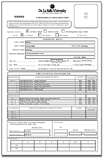

|
Systems
Management Office : Updates
Online
Course Enlistment
by: Loveleah Mallari
The
idea for online course enlistment kicked off after it was
decided that undergraduate enrollment would go online. Course
enlistment is a prerequisite to enrollment.
On
June 11, 2001 the web-based program was presented to the Academic
Assistants, Vice Deans, Mr. Samuel P. Mallare, Ms. Aida Velaso
(PSI Registrar), and Ms. Agnes Yuhico (AVP Academic Services)
at Conference Room B and the Registrar's Office. The presentation
was made by Mr. Edwin Santiago (Manila Registrar), Ms. Vivian
del Castillo-Sy, Ms. Amy Salcedo, and the My La Salle (MLS)
group headed by Mr. James Sy. As a result of that successful
presentation, the program was made accessible to students
on June 18, 2001.
Students
enlist for the subjects that they intend to take the following
term using the Enlist in Courses option. On the other hand,
Academic Assistants and Vice Deans are provided with a View
Tally option where they can query the actual tally of the
courses enlisted by the students. With this facility, they
are able to project the number of sections which need to be
opened the coming term.
The
MLS group is composed of Mr. James Sy, Ms. Ampel Balanza,
Mr. Johnny Benitez, Mr. Rhaniel Bingcang, and Ms. Loveleah
Mallari. The assistance of Mr. Mark Rufino was also tapped
for the Active Server Pages component of the program.
HED's
Consumables and Service Equipment Request Modules Implemented
by:
Brian Co
System
Management Office's Helpdesk System (HED) is a customized
version of Epicor Inc.'s Clientele software. It is an integrated,
mission-critical solution for customer relationship management.
HED
allows mid-sized organizations such as DLSU to support and
manage their most important asset: their customers. With the
system, you can gather, organize, track, and share a variety
of customer data. The
system does this by providing detailed call, asset and knowledge
management, and by complete tracking of user profiles. The
Service Maintenance Requests module of HED manages all calls
and requests received by the IT center's helpdesk staff. The
other notable components of the system are the modules on
Service Equipment Requests, Consumable Deliveries and Requisitions,
and ITC Training.
Very
soon, with the use of the Asset Management Module, ITC personnel
will have at the touch of a button detailed information on
all computer hardware and software used in campus. This includes
gathering historical data on equipment use, asset assignments
and asset accountability.
Admissions
System (ADM) Now Has Online Application Form
by:
Loveleah Mallari
The
Admissions System handles the acceptance and screening of
applicants as well as the data entry and update of pertinent
admissions data for each accepted student.
The
system now has an Online Application Form. With the availability
of this web-based application form, applicants may fill out
and submit their forms online! Applicants are saved from the
hassle of going to the DLSU Admissions Office just to get
the application form. This is especially helpful to our applicants
who hail from outside Metro Manila.
This
feature also frees the Admissions Office personnel from manually
entering data into the system since the applicants themselves
have already entered the necessary information.
SMO
Introduces the Library Portal System (LPS)
by:
Vivian del Castillo-Sy
LPS
is a web-based system that allows members of the De La Salle
academic community to search the library holdings of the different
DLSU system schools. It was designed to support the Asian
University Network's (of which DLSU is a member) Virtual University
initiative.
Currently
on its first stage, LPS lets users choose what particular
library they would like to check out, and then allows them
to enter their search term. The system presents a standard
look for the search results, even if the computer systems
being operated at the different libraries are not the same.
The library systems and LPS communicate via the Z39.50 protocol.
In
the near future, LPS should be able to let users issue the
search term to all the system libraries and consolidate search
results.
more
updates on the next page >>
|